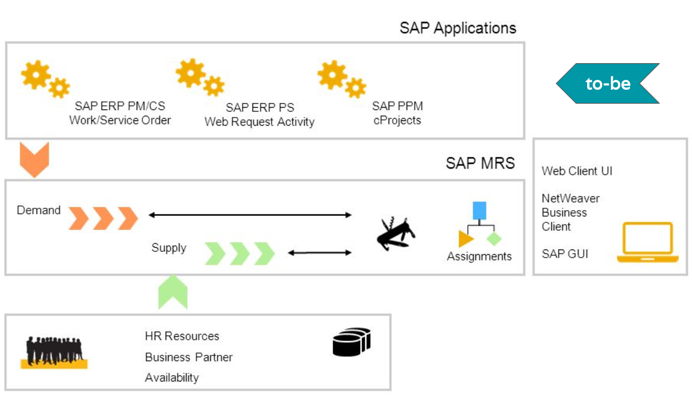

Inability to perform Weekly Forecasts
Challenge Three
Inability to perform weekly forecasts
Our team has identified pain points on two processes: schedule preventive maintenance and control maintenance. First, control maintenance is most neglected. Work orders are subjected to infrastructure, supply chain and workforce constraints. Currently, work supervisors determine which work orders are best to be executed immediately through clipboards, whiteboards and spreadsheets. Second, preventive maintenance has limited ERP support. Assets have determined threshold of usage before a preventive maintenance is filed, scheduling becomes more complex as control maintenance factor comes into play. The ERP has limited functionality on this to aid shift supervisors. Third, work package state and date changes are not recorded in the course of the ERP processes. Technicians only document work done in ERP after work order is completed. Therefore, no up-to-date information on work packages impacts forecasting.
Proposed Solution: SAP Multiresource Scheduling. Provide a ‘Scheduler Workplace’ within which the Maintenance Planner can work to balance the maintenance demands with supply of required resources such as labour, tools, support equipment, or facilities. (MRS) is a solution for resource management in Asset Management, it can be used across the whole range of demands (including Projects, Customer Service, Maintenance), allowing planners to visualize maintenance demand status and assign requests to the maintenance staff and tools using a graphical planning board. Helps in getting visibility into resource availability, maintenance status and data, to provide efficient collaboration across the planning process, minimize manual data input and errors, and provide accurate estimates and forecasts resulting in an optimized use of resources.
Motivation Layer
This stage of the process is dynamic and involves many actors performing many different activities. A clear definition of the process and configuration of supporting functionality in ERP will improve ability to repair aircraft.
Business Layer
The current process includes multiple services, assignments and tasks that in essence will remain under the proposed solution. However, the way in with the Application Services are perform will be modified by the integration of SAP Multiresource Scheduling.
Application Layer
From a service’s realization viewpoint, SAP Multiresource Scheduling will modify the way in which the forecasts are generated by integrating three dimensions: demand, qualifications and resources. Its implementation will entail the integration and update of multiple data sets and application components in order to provide accurate information.